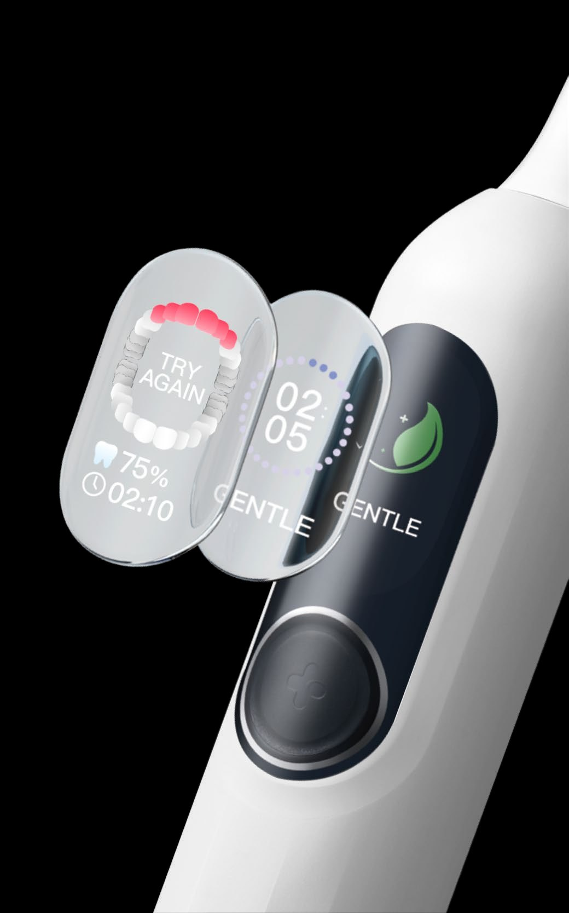
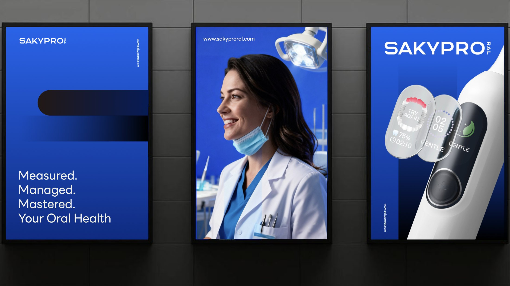
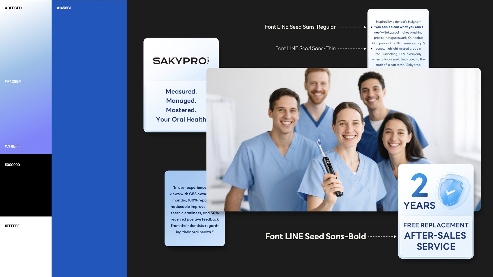
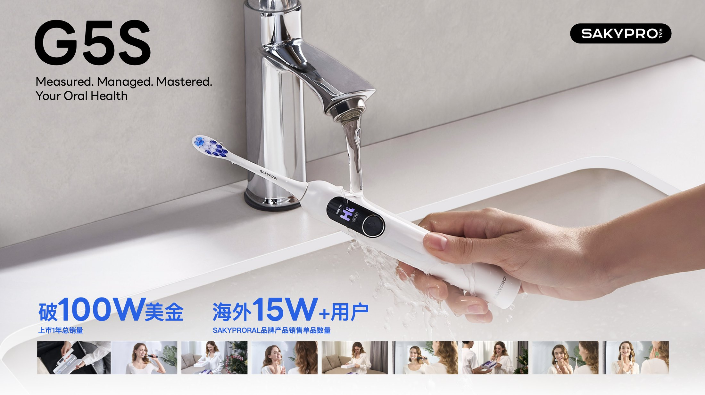

SAKYPRORAL
Positioning Shuke’s overseas brand and building one identity that works on North American and European DTC pages and on shelf. 为 SAKYPRORAL 品牌定位，打造品牌形象，塑造 DTC & 货架电商视觉。


Background
设计背景
SAKYPRORAL is Shuke’s overseas brand, aimed at mid-to-high-end oral-care markets in North America and Europe, with electric toothbrushes and water flossers as its core products and Philips and Oral-B as its local benchmarks. The audience is middle-class households. Shuke’s existing English mark “SAKY PRO” had already been registered by another party overseas, so the brand was renamed SAKYPRORAL.
Starting from zero meant solving three things at once: no consistent standard across touchpoints, so the brand could not compound with local channels and media; insufficient visual quality against established local brands, so nothing justified a mid-to-high-end price; and no rules for the new overseas e-commerce and offline channels to build on.
SAKYPRORAL 是舒客旗下的出海品牌，针对北美、欧洲等中高端口腔市场，主打电动牙刷、冲牙器等电子口腔产品，对标飞利浦、欧乐 B 等本土高端品牌。目标人群定位中产家庭；由于舒客国内英文商标「SAKY PRO」在国外被抢注，品牌更名为「SAKYPRORAL」。
从零开始意味着三件事同时要解决：新品牌在各触点没有统一标准，难以与当地渠道、推广形成合力；对比本土老牌，视觉竞争力较弱，缺乏支撑中高端定位的形象质感；现有视觉没有适配欧美新电商与线下渠道的规范，无法支撑品牌在海外市场的持续渗透。
Approach
设计思路
Zero-to-One Overseas Identity — the decisions that set the direction. 0-1 品牌出海视觉建立 —— 决定方向的几个选择。
-
01
A positioning, not just a logo先明确「年轻专业口腔品牌」定位
Align every touchpoint to one position — a young, professional oral-care brand — so overseas media spend lands on a single, repeatable image.
统一全触点形象，明确「年轻专业口腔品牌」定位，提升海外营销精准度。
-
02
Type and colour as the quality signal用字体与色彩建立专业精致感
The LINE Seed Sans family (Thin / Regular / Bold) carries the voice; the blue scale — #DFECFD, #1456C1, #A4C8EF, #7F8EFF with black and white — builds the professional, precise feel that matches middle-class European and American taste and supports a premium price.
以 LINE Seed Sans 家族（Thin / Regular / Bold）建立语气；用 #DFECFD、#1456C1、#A4C8EF、#7F8EFF 与黑白的蓝色梯度建立专业精致感，匹配欧美中产审美，支撑产品溢价。
-
03
Rules built for overseas channels建立适配海外渠道的 PI / VI 规范
E-commerce pages, offline display and after-sales material all fall under one standard, so local teams get clear direction instead of one-off files. The brand line — “Measured. Managed. Mastered. Your Oral Health.” — anchors every layout.
电商页面、线下陈列与售后物料纳入同一套规范，为本地团队提供标准化的形象指导，而不是一次性文件。品牌语「Measured. Managed. Mastered. Your Oral Health.」成为所有版式的锚点。
Outcome
成果展示




- Result
- USD 1M+ total sales in the first year; 150K+ overseas users上市 1 年总销量破 100W 美金；海外 15W+ 用户
- Deliverables
- Brand audit · VI / PI manual · product visual system品牌梳理 · VI / PI 规范 · 产品视觉系统
- Signature
- “Measured. Managed. Mastered. Your Oral Health.” — sakyproral.com「Measured. Managed. Mastered. Your Oral Health.」— sakyproral.com
Next project / 下一个作品
G5 Pro